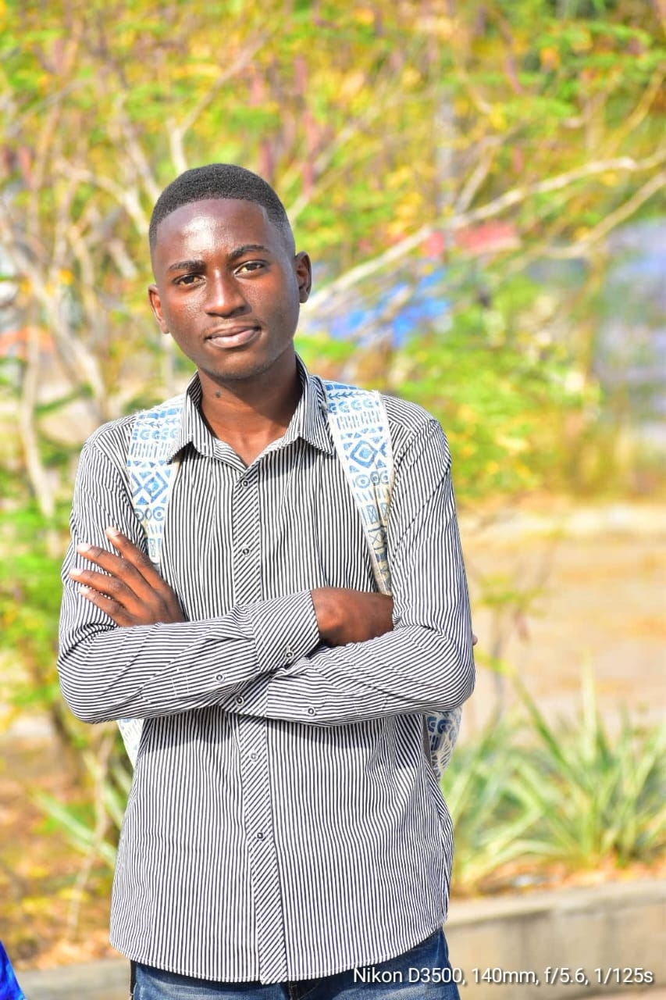

Mirland TSATY |WDD 130

Greet! I am Mirland TSATY from Congo Brazzaville a small French speaking Country in Central Africa, I currently dwell in Accra(Ghana) and I am 20years old. I for the time being learn English in a training school in Accra and enrolled as a BYU-pathway student in Web fundamentals. I do like learning new skills in General and during my free time I play basketball, learn English with fun, read Books, read my Bible or watch a movie.